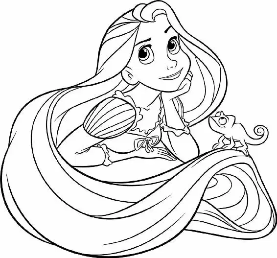

The crash of the dam bursting was earth-shaking. Water roared into the cavern.
The powerful moving wall of water knocked down a pillar as Flynn ran. Dashing at top speed, he caught up with Rapunzel and Pascal. Flynn grabbed an armload of Rapunzel’s hair as the two ran for cover. The Stabbingtons were washed away in a flood of water. An enormous pillar cracked and began to topple under the power of the rushing water. Rapunzel and Flynn had ten feet to get to the safety of a small shelte, a sort of cave — but the pillar was falling right toward them. Their legs pumping, Flynn and Rapunzel took one last mighty leap. The pillar crashed down just behind them as they ducked into the cave. They covered their heads as an avalanche of broken rocks showered down and blocked the entrance.
The palace guardsmen and Maximus were swept away in the rushing water outside.
Flynn and Rapunzel were safe for now, but the tunnel’s entrance was blocked by the rubble from the fallen pillar. Flynn, Rapunzel, and little Pascal were now sealed inside a rocky cavern.
The sealed cavern did not protect them from the rushing water. Within minutes, Flynn and Rapunzel were waist deep in water — water that was rising quickly. Flynn dove down, searching for an exit. He hardly noticed the huge gash on his hand as he grasped for any opening among the jagged rocks.
“It’s no use,” he said, gasping, as he emerged from the dark water. “I can’t see anything.”
Rapunzel took a deep breath. She was about to dive underwater when Flynn took her wrist. “Hey, look,” he said, “there’s no point, Blondie. It’s pitch-black down there.”
Flynn and Rapunzel looked at each other helplessly. Having come so far together, they would die together in this little cave.
“This is all my fault,” Rapunzel said. “Mother Gothel was right. I never should have done this. I’m so sorry, Flynn.” Rapunzel couldn’t help thinking of Mother Gothel’s warnings about the world outside the tower, and yet ... Mother Gothel had been wrong about some things. She had told Rapunzel that the tavern thugs and Flynn were evil, but the thugs had become her friends, and Flynn —
“Eugene,” he said as he grasped Rapunzel’s hand. It was a dying man’s confession. “My real name’s Eugene Fitzherbert. Someone might as well know.”
After a moment of silence, Rapunzel blurted out her own secret: “I have magic hair that glows when I sing.” She couldn’t believe it — she had broken one of Mother Gothel’s rules by telling Flynn about her hair!
“What?” Flynn wasn’t sure he’d heard her correctly.
“I have magic hair that glows when I sing!” As she spoke, Rapunzel realized that her hair might help them find a way out of the cave.
Flynn stared at her speechlessly as she began to sing. Within moments, her hair started to glow, lighting up the cave.
Rapunzel took a deep breath and dove underwater, lighting their way. Following her, Flynn saw a small opening in the corner of the cave. He took her hand and they swam to it. Yanking at stones with all his energy, Flynn broke through at last.
The water burst through the opening, carrying Flynn and Rapunzel out into the river.
Coughing and gasping for air, Rapunzel, Pascal, and Flynn threw themselves onto the riverbank. Lying face down, the three took a few moments just to breathe.
“I’m alive!” Rapunzel choked out.
Flynn looked at Pascal. Flynn was pale, and his eyes were wide with disbelief. He had done many daring things in his life, but he had never, ever experienced anything like this! “Her hair glows!” Flynn stifled a tiny shriek as he spoke to Pascal.
“I’m alive!” Rapunzel screamed joyfully, not even hearing Flynn.
“I didn’t see that coming,” Flynn desperately whispered to Pascal. The chameleon stared right back at him, unblinking. “The hair actually glows!”
“Eugene!” Rapunzel called out.
“Why does her hair glow?” Flynn asked Pascal, but the chameleon could only shrug.
“Eugene!” Rapunzel shouted, trying to get his attention.
“What?” Flynn shouted in reply. He was still in shock, trying to figure it all out. Rapunzel began dragging her hair out of the water. As she squeezed it dry, she stared at Flynn’s injured hand. It looked terrible.
Rapunzel sighed. Flynn was freaked out by her. But she needed to help him. “It doesn’t just glow,” she added.
Flynn’s jaw dropped. He looked at Pascal, who was staring at him with a very wide grin spreading impishly across his face. The chameleon knew that Flynn was in for an even bigger surprise.
